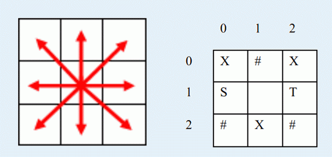

a180285幸运地被选作了地球到喵星球的留学生，其实是作为特工去调查喵星人是否有侵略地球的企图。喵星人果
然打算入侵地球！从a180285口中得到确切消息之后，地球防御小组成员决定制定反侵略计划。喵星到地球的一段
必经之路可以看作n*m的格点，喵星人将会从地图上的S位置出发，目的地是地球的入口T。为了抵抗喵星人的入侵
，地球防御小组打算在地图的格点上放置一些炮塔（最多放置K个），炮塔攻击周围的8个方向（8个方向分别是：
东，南，西，北，东北，西北，东南，西南）（如下左图所示，中间格子的炮塔可以攻击周围的八个格子）。此外
地球防御小组还可以在地图上放置无限多个障碍，使得喵星人无法从有障碍的格子经过。右图是3*3地图的一个示
例，其中X表示炮塔，#表示障碍，有炮塔或障碍的格子喵星人都无法经过，在这张地图中喵星人从S走到T受到的伤
害如下:在S(1,0)处受到伤害为2（炮塔(0,0)和(2,1)能攻击到S）,在空地(1,1)处受到伤害为3（同时被炮塔(0,0)
和(0,2)和(2,1)攻击），在T(1,2)处受到伤害为2（炮塔(0,2)和(2,1)能攻击到T），于是受到的总伤害为2+3+2=7
。作为地球防御小组的一员，请你为喵星人布阵，使得喵星人受到的伤害最大。注意如果有多条从S到T的路径，喵
星人会选择伤害最小的一条。
